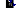
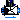

This package contains base classes that are used to construct the models in Buildings.Fluid.Actuators.
Extends from Modelica.Icons.BasesPackage (Icon for packages containing base classes).| Name | Description |
|---|---|
|  ActuatorSignal | Partial model that implements the filtered opening for valves and dampers |
| PartialDamperExponential | Partial model for air dampers with exponential opening characteristics |
| Partial three way valve | |
|  PartialTwoWayValve | Partial model for a two way valve |
| ValveParameters | Model with parameters for valves |
| Derivative of valve opening characteristics for equal percentage valve | |
| Valve opening characteristics for equal percentage valve | |
| Damper opening characteristics for an exponential damper | |
| Collection of models that illustrate model use and test models |
This model implements the filter that is used to approximate the travel
time of the actuator.
Models that extend this model use the signal
y_actual to obtain the
current position of the actuator.
See Buildings.Fluid.Actuators.UsersGuide for a description of the filter.
| Type | Name | Default | Description |
|---|---|---|---|
| Dynamics | |||
| Filtered opening | |||
| Boolean | filteredOpening | true | = true, if opening is filtered with a 2nd order CriticalDamping filter |
| Time | riseTime | 120 | Rise time of the filter (time to reach 99.6 % of an opening step) [s] |
| Init | init | Modelica.Blocks.Types.Init.I... | Type of initialization (no init/steady state/initial state/initial output) |
| Real | y_start | 1 | Initial value of output |
| Type | Name | Description |
|---|---|---|
| input RealInput | y | Actuator position (0: closed, 1: open) |
| output RealOutput | y_actual | Actual valve position |
model ActuatorSignal
"Partial model that implements the filtered opening for valves and dampers"
parameter Boolean filteredOpening=true
"= true, if opening is filtered with a 2nd order CriticalDamping filter";
parameter Modelica.SIunits.Time riseTime=120
"Rise time of the filter (time to reach 99.6 % of an opening step)";
parameter Modelica.Blocks.Types.Init init=Modelica.Blocks.Types.Init.InitialOutput
"Type of initialization (no init/steady state/initial state/initial output)";
parameter Real y_start=1 "Initial value of output";
Modelica.Blocks.Interfaces.RealInput y(min=0, max=1)
"Actuator position (0: closed, 1: open)";
Modelica.Blocks.Interfaces.RealOutput y_actual "Actual valve position";
// Classes used to implement the filtered opening
protected
Modelica.Blocks.Interfaces.RealOutput y_filtered if filteredOpening
"Filtered valve position in the range 0..1";
Modelica.Blocks.Continuous.Filter filter(
order=2,
f_cut=5/(2*Modelica.Constants.pi*riseTime),
final init=init,
final y_start=y_start,
final analogFilter=Modelica.Blocks.Types.AnalogFilter.CriticalDamping,
final filterType=Modelica.Blocks.Types.FilterType.LowPass,
x(each stateSelect=StateSelect.always)) if
filteredOpening
"Second order filter to approximate valve opening time, and to improve numerics";
equation
connect(filter.y, y_filtered);
if filteredOpening then
connect(y, filter.u);
connect(filter.y, y_actual);
else
connect(y, y_actual);
end if;
end ActuatorSignal;
Partial model for air dampers with exponential opening characteristics. This is the base model for air dampers and variable air volume flow boxes. The model implements the functions that relate the opening signal, the pressure drop and the mass flow rate. The model also defines parameters that are used by different air damper models.
For a description of the opening characteristics and typical parameter values, see the damper model Exponential.
Extends from Buildings.Fluid.BaseClasses.PartialResistance (Partial model for a hydraulic resistance), Buildings.Fluid.Actuators.BaseClasses.ActuatorSignal (Partial model that implements the filtered opening for valves and dampers).
| Type | Name | Default | Description |
|---|---|---|---|
| replaceable package Medium | PartialMedium | Medium in the component | |
| MassFlowRate | m_flow_turbulent | if use_deltaM then deltaM*m_... | Turbulent flow if |m_flow| >= m_flow_turbulent [kg/s] |
| Boolean | use_deltaM | true | Set to true to use deltaM for turbulent transition, else ReC is used |
| Real | deltaM | 0.3 | Fraction of nominal mass flow rate where transition to turbulent occurs |
| Boolean | use_v_nominal | true | Set to true to use face velocity to compute area |
| Velocity | v_nominal | 1 | Nominal face velocity [m/s] |
| Area | A | m_flow_nominal/rho_default/v... | Face area [m2] |
| Boolean | roundDuct | false | Set to true for round duct, false for square cross section |
| Real | ReC | 4000 | Reynolds number where transition to turbulent starts |
| Real | kFixed | Flow coefficient of fixed resistance that may be in series with damper, k=m_flow/sqrt(dp), with unit=(kg.m)^(1/2). | |
| Nominal condition | |||
| MassFlowRate | m_flow_nominal | Nominal mass flow rate [kg/s] | |
| Pressure | dp_nominal | Pressure drop at nominal mass flow rate [Pa] | |
| Initialization | |||
| MassFlowRate | m_flow.start | 0 | Mass flow rate from port_a to port_b (m_flow > 0 is design flow direction) [kg/s] |
| Pressure | dp.start | 0 | Pressure difference between port_a and port_b [Pa] |
| Assumptions | |||
| Boolean | allowFlowReversal | system.allowFlowReversal | = true to allow flow reversal, false restricts to design direction (port_a -> port_b) |
| Advanced | |||
| Boolean | homotopyInitialization | true | = true, use homotopy method |
| Boolean | from_dp | false | = true, use m_flow = f(dp) else dp = f(m_flow) |
| Boolean | linearized | false | = true, use linear relation between m_flow and dp for any flow rate |
| Boolean | use_constant_density | true | Set to true to use constant density for flow friction |
| Diagnostics | |||
| Boolean | show_T | false | = true, if actual temperature at port is computed |
| Dynamics | |||
| Filtered opening | |||
| Boolean | filteredOpening | true | = true, if opening is filtered with a 2nd order CriticalDamping filter |
| Time | riseTime | 120 | Rise time of the filter (time to reach 99.6 % of an opening step) [s] |
| Init | init | Modelica.Blocks.Types.Init.I... | Type of initialization (no init/steady state/initial state/initial output) |
| Real | y_start | 1 | Initial value of output |
| Damper coefficients | |||
| Real | a | -1.51 | Coefficient a for damper characteristics |
| Real | b | 0.105*90 | Coefficient b for damper characteristics |
| Real | yL | 15/90 | Lower value for damper curve |
| Real | yU | 55/90 | Upper value for damper curve |
| Real | k0 | 1E6 | Flow coefficient for y=0, k0 = pressure drop divided by dynamic pressure |
| Real | k1 | 0.45 | Flow coefficient for y=1, k1 = pressure drop divided by dynamic pressure |
| Type | Name | Description |
|---|---|---|
| FluidPort_a | port_a | Fluid connector a (positive design flow direction is from port_a to port_b) |
| FluidPort_b | port_b | Fluid connector b (positive design flow direction is from port_a to port_b) |
| input RealInput | y | Actuator position (0: closed, 1: open) |
| output RealOutput | y_actual | Actual valve position |
partial model PartialDamperExponential
"Partial model for air dampers with exponential opening characteristics"
extends Buildings.Fluid.BaseClasses.PartialResistance(
m_flow_turbulent=if use_deltaM then deltaM * m_flow_nominal else
eta_default*ReC*sqrt(area)*facRouDuc);
extends Buildings.Fluid.Actuators.BaseClasses.ActuatorSignal;
parameter Boolean use_deltaM = true
"Set to true to use deltaM for turbulent transition, else ReC is used";
parameter Real deltaM = 0.3
"Fraction of nominal mass flow rate where transition to turbulent occurs";
parameter Boolean use_v_nominal = true
"Set to true to use face velocity to compute area";
parameter Modelica.SIunits.Velocity v_nominal=1 "Nominal face velocity";
parameter Modelica.SIunits.Area A=m_flow_nominal/rho_default/v_nominal
"Face area";
parameter Boolean roundDuct = false
"Set to true for round duct, false for square cross section";
parameter Real ReC=4000 "Reynolds number where transition to turbulent starts";
parameter Real a(unit="")=-1.51 "Coefficient a for damper characteristics";
parameter Real b(unit="")=0.105*90 "Coefficient b for damper characteristics";
parameter Real yL = 15/90 "Lower value for damper curve";
parameter Real yU = 55/90 "Upper value for damper curve";
parameter Real k0(min=0) = 1E6
"Flow coefficient for y=0, k0 = pressure drop divided by dynamic pressure";
parameter Real k1(min=0) = 0.45
"Flow coefficient for y=1, k1 = pressure drop divided by dynamic pressure";
parameter Boolean use_constant_density=true
"Set to true to use constant density for flow friction";
Medium.Density rho "Medium density";
parameter Real kFixed(unit="")
"Flow coefficient of fixed resistance that may be in series with damper, k=m_flow/sqrt(dp), with unit=(kg.m)^(1/2).";
Real kDam(unit="")
"Flow coefficient of damper, k=m_flow/sqrt(dp), with unit=(kg.m)^(1/2)";
Real k(unit="")
"Flow coefficient of damper plus fixed resistance, k=m_flow/sqrt(dp), with unit=(kg.m)^(1/2)";
protected
parameter Medium.Density rho_default=Medium.density(sta_default)
"Density, used to compute fluid volume";
parameter Real[3] cL=
{(Modelica.Math.log(k0) - b - a)/yL^2,
(-b*yL - 2*Modelica.Math.log(k0) + 2*b + 2*a)/yL,
Modelica.Math.log(k0)} "Polynomial coefficients for curve fit for y < yl";
parameter Real[3] cU=
{(Modelica.Math.log(k1) - a)/(yU^2 - 2*yU + 1),
(-b*yU^2 - 2*Modelica.Math.log(k1)*yU - (-2*b - 2*a)*yU - b)/(yU^2 - 2*yU + 1),
(Modelica.Math.log(k1)*yU^2 + b*yU^2 + (-2*b - 2*a)*yU + b + a)/(yU^2 - 2*yU + 1)}
"Polynomial coefficients for curve fit for y > yu";
parameter Real facRouDuc= if roundDuct then sqrt(Modelica.Constants.pi)/2 else 1;
parameter Modelica.SIunits.Area area=
if use_v_nominal then m_flow_nominal/rho_default/v_nominal else A
"Face velocity used in the computation";
initial equation
assert(k0 > k1, "k0 must be bigger than k1.");
assert(m_flow_turbulent > 0, "m_flow_turbulent must be bigger than zero.");
equation
rho = if use_constant_density then
rho_default else
Medium.density(Medium.setState_phX(port_a.p, inStream(port_a.h_outflow), inStream(port_a.Xi_outflow)));
// flow coefficient, k=m_flow/sqrt(dp)
kDam=sqrt(2*rho)*area/Buildings.Fluid.Actuators.BaseClasses.exponentialDamper(
y=y_actual,
a=a,
b=b,
cL=cL,
cU=cU,
yL=yL,
yU=yU);
k = if (kFixed>Modelica.Constants.eps) then sqrt(1/(1/kFixed^2 + 1/kDam^2)) else kDam;
// Pressure drop calculation
if linearized then
m_flow*m_flow_nominal_pos = k^2*dp;
else
if homotopyInitialization then
if from_dp then
m_flow=homotopy(
actual=Buildings.Fluid.BaseClasses.FlowModels.basicFlowFunction_dp(
dp=dp, k=k,
m_flow_turbulent=m_flow_turbulent),
simplified=m_flow_nominal_pos*dp/dp_nominal_pos);
else
dp=homotopy(
actual=Buildings.Fluid.BaseClasses.FlowModels.basicFlowFunction_m_flow(
m_flow=m_flow, k=k,
m_flow_turbulent=m_flow_turbulent),
simplified=dp_nominal_pos*m_flow/m_flow_nominal_pos);
end if; // from_dp
else // do not use homotopy
if from_dp then
m_flow=Buildings.Fluid.BaseClasses.FlowModels.basicFlowFunction_dp(
dp=dp, k=k, m_flow_turbulent=m_flow_turbulent);
else
dp=Buildings.Fluid.BaseClasses.FlowModels.basicFlowFunction_m_flow(
m_flow=m_flow, k=k, m_flow_turbulent=m_flow_turbulent);
end if; // from_dp
end if; // homotopyInitialization
end if; // linearized
end PartialDamperExponential;
 Buildings.Fluid.Actuators.BaseClasses.PartialThreeWayValve
Buildings.Fluid.Actuators.BaseClasses.PartialThreeWayValve
Partial model of a three way valve. This is the base model for valves
with different opening characteristics, such as linear, equal percentage
or quick opening. The three way valve model consists of a mixer where
valves are placed in two of the flow legs. The third flow leg
has no friction.
The flow coefficient Kv for flow from port_1 -> port_2 is
a parameter.
The flow coefficient for the bypass flow from port_3 -> port_2
is computed as
Kv(port_3 -> port_2)
fraK = ----------------------
Kv(port_1 -> port_2)
where 0 < fraK ≤ 1 is a parameter with a default value
of fraK=0.7.
Since this model uses two way valves to construct a three way valve, see Buildings.Fluid.Actuators.BaseClasses.PartialTwoWayValve for details regarding the valve implementation.
Extends from Buildings.Fluid.BaseClasses.PartialThreeWayResistance (Flow splitter with partial resistance model at each port), Buildings.Fluid.Actuators.BaseClasses.ActuatorSignal (Partial model that implements the filtered opening for valves and dampers), Buildings.Fluid.Actuators.BaseClasses.ValveParameters (Model with parameters for valves).
| Type | Name | Default | Description |
|---|---|---|---|
| replaceable package Medium | PartialMedium | Medium in the component | |
| Real | fraK | 0.7 | Fraction Kv(port_3->port_2)/Kv(port_1->port_2) |
| Real | l[2] | {0,0} | Valve leakage, l=Kv(y=0)/Kv(y=1) |
| Flow Coefficient | |||
| CvTypes | CvData | Buildings.Fluid.Types.CvType... | Selection of flow coefficient |
| Real | Kv | Kv (metric) flow coefficient [m3/h/(bar)^(1/2)] | |
| Real | Cv | Cv (US) flow coefficient [USG/min/(psi)^(1/2)] | |
| Area | Av | Av (metric) flow coefficient [m2] | |
| Pressure-flow linearization | |||
| Real | deltaM | 0.02 | Fraction of nominal flow rate where linearization starts, if y=1 |
| Nominal condition | |||
| MassFlowRate | m_flow_nominal | Nominal mass flow rate [kg/s] | |
| Pressure | dpValve_nominal | Nominal pressure drop of fully open valve, used if CvData=Buildings.Fluid.Types.CvTypes.OpPoint [Pa] | |
| Pressure | dpFixed_nominal[2] | {0,0} | Nominal pressure drop of pipes and other equipment in flow legs at port_1 and port_3 [Pa] |
| Dynamics | |||
| Equations | |||
| Dynamics | energyDynamics | Modelica.Fluid.Types.Dynamic... | Formulation of energy balance |
| Dynamics | massDynamics | energyDynamics | Formulation of mass balance |
| Boolean | dynamicBalance | true | Set to true to use a dynamic balance, which often leads to smaller systems of equations |
| MassFlowRate | mDyn_flow_nominal | m_flow_nominal | Nominal mass flow rate for dynamic momentum and energy balance [kg/s] |
| Nominal condition | |||
| Time | tau | 10 | Time constant at nominal flow for dynamic energy and momentum balance [s] |
| Filtered opening | |||
| Boolean | filteredOpening | true | = true, if opening is filtered with a 2nd order CriticalDamping filter |
| Time | riseTime | 120 | Rise time of the filter (time to reach 99.6 % of an opening step) [s] |
| Init | init | Modelica.Blocks.Types.Init.I... | Type of initialization (no init/steady state/initial state/initial output) |
| Real | y_start | 1 | Initial value of output |
| Initialization | |||
| AbsolutePressure | p_start | Medium.p_default | Start value of pressure [Pa] |
| Temperature | T_start | Medium.T_default | Start value of temperature [K] |
| MassFraction | X_start[Medium.nX] | Medium.X_default | Start value of mass fractions m_i/m [kg/kg] |
| ExtraProperty | C_start[Medium.nC] | fill(0, Medium.nC) | Start value of trace substances |
| ExtraProperty | C_nominal[Medium.nC] | fill(1E-2, Medium.nC) | Nominal value of trace substances. (Set to typical order of magnitude.) |
| Advanced | |||
| Boolean | from_dp | true | = true, use m_flow = f(dp) else dp = f(m_flow) |
| Boolean | homotopyInitialization | true | = true, use homotopy method |
| Boolean | linearized[2] | {false,false} | = true, use linear relation between m_flow and dp for any flow rate |
| Nominal condition | |||
| Density | rhoStd | Medium.density_pTX(101325, 2... | Inlet density for which valve coefficients are defined [kg/m3] |
| Type | Name | Description |
|---|---|---|
| FluidPort_a | port_1 | |
| FluidPort_b | port_2 | |
| FluidPort_a | port_3 | |
| input RealInput | y | Actuator position (0: closed, 1: open) |
| output RealOutput | y_actual | Actual valve position |
partial model PartialThreeWayValve "Partial three way valve"
extends Buildings.Fluid.BaseClasses.PartialThreeWayResistance(
final mDyn_flow_nominal = m_flow_nominal,
redeclare replaceable Buildings.Fluid.Actuators.BaseClasses.PartialTwoWayValve
res1 constrainedby
Buildings.Fluid.Actuators.BaseClasses.PartialTwoWayValve(
deltaM=deltaM,
dp(start=dpValve_nominal/2),
from_dp=from_dp,
redeclare final package Medium = Medium,
final l=l[1],
final linearized=linearized[1],
final homotopyInitialization=homotopyInitialization,
final CvData=Buildings.Fluid.Types.CvTypes.OpPoint,
final m_flow_nominal=m_flow_nominal,
final dpValve_nominal=dpValve_nominal,
final dpFixed_nominal=dpFixed_nominal[1],
final filteredOpening=false),
redeclare FixedResistances.LosslessPipe res2(
redeclare package Medium = Medium, m_flow_nominal=m_flow_nominal),
redeclare replaceable Buildings.Fluid.Actuators.BaseClasses.PartialTwoWayValve
res3 constrainedby
Buildings.Fluid.Actuators.BaseClasses.PartialTwoWayValve(
deltaM=deltaM,
dp(start=dpValve_nominal/2),
from_dp=from_dp,
redeclare final package Medium = Medium,
final l=l[2],
final linearized=linearized[2],
final homotopyInitialization=homotopyInitialization,
final CvData=Buildings.Fluid.Types.CvTypes.OpPoint,
final m_flow_nominal=m_flow_nominal,
final dpValve_nominal=dpValve_nominal/fraK^2,
final dpFixed_nominal=dpFixed_nominal[2],
final filteredOpening=false));
extends Buildings.Fluid.Actuators.BaseClasses.ActuatorSignal;
extends Buildings.Fluid.Actuators.BaseClasses.ValveParameters(
rhoStd=Medium.density_pTX(101325, 273.15+4, Medium.X_default));
parameter Modelica.SIunits.Pressure dpFixed_nominal[2](each displayUnit="Pa",
each min=0) = {0, 0}
"Nominal pressure drop of pipes and other equipment in flow legs at port_1 and port_3";
parameter Real fraK(min=0, max=1) = 0.7
"Fraction Kv(port_3->port_2)/Kv(port_1->port_2)";
parameter Real[2] l(each min=0, each max=1) = {0, 0}
"Valve leakage, l=Kv(y=0)/Kv(y=1)";
parameter Real deltaM = 0.02
"Fraction of nominal flow rate where linearization starts, if y=1";
parameter Boolean[2] linearized = {false, false}
"= true, use linear relation between m_flow and dp for any flow rate";
protected
Modelica.Blocks.Math.Feedback inv "Inversion of control signal";
Modelica.Blocks.Sources.Constant uni(final k=1)
"Outputs one for bypass valve";
equation
connect(uni.y, inv.u1);
end PartialThreeWayValve;
Partial model for a two way valve. This is the base model for valves with different opening characteristics, such as linear, equal percentage or quick opening.
The following options have been adapted from the valve implementation in Modelica.Fluid and are described in Buildings.Fluid.Actuators.BaseClasses.ValveParameters.
In contrast to the model in
Modelica.Fluid, this model uses the parameter Kv_SI,
which is the flow coefficient in SI units, i.e.,
it is the ratio between mass flow rate in kg/s and square root
of pressure drop in Pa.
To prevent the derivative d/dP (m_flow) to be infinite near
the origin, this model linearizes the pressure drop versus flow relation
ship. The region in which it is linearized is parameterized by
m_turbulent_flow = deltaM * m_flow_nominal
Because the parameterization contains Kv_SI, the values for
deltaM and dp_nominal need not be changed if the valve size
changes.
The two way valve models are implemented using this partial model, as opposed to using different functions for the valve opening characteristics, because each valve opening characteristics has different parameters.
Extends from Buildings.Fluid.BaseClasses.PartialResistance (Partial model for a hydraulic resistance), Buildings.Fluid.Actuators.BaseClasses.ValveParameters (Model with parameters for valves), Buildings.Fluid.Actuators.BaseClasses.ActuatorSignal (Partial model that implements the filtered opening for valves and dampers).
| Type | Name | Default | Description |
|---|---|---|---|
| replaceable package Medium | PartialMedium | Medium in the component | |
| MassFlowRate | m_flow_turbulent | deltaM*abs(m_flow_nominal) | Turbulent flow if |m_flow| >= m_flow_turbulent [kg/s] |
| Real | l | 0.0001 | Valve leakage, l=Kv(y=0)/Kv(y=1) |
| Nominal condition | |||
| MassFlowRate | m_flow_nominal | Nominal mass flow rate [kg/s] | |
| Pressure | dp_nominal | dpValve_nominal + dpFixed_no... | Pressure drop at nominal mass flow rate [Pa] |
| Pressure | dpValve_nominal | Nominal pressure drop of fully open valve, used if CvData=Buildings.Fluid.Types.CvTypes.OpPoint [Pa] | |
| Pressure | dpFixed_nominal | 0 | Pressure drop of pipe and other resistances that are in series [Pa] |
| Initialization | |||
| MassFlowRate | m_flow.start | 0 | Mass flow rate from port_a to port_b (m_flow > 0 is design flow direction) [kg/s] |
| Flow Coefficient | |||
| CvTypes | CvData | Buildings.Fluid.Types.CvType... | Selection of flow coefficient |
| Real | Kv | Kv (metric) flow coefficient [m3/h/(bar)^(1/2)] | |
| Real | Cv | Cv (US) flow coefficient [USG/min/(psi)^(1/2)] | |
| Area | Av | Av (metric) flow coefficient [m2] | |
| Pressure-flow linearization | |||
| Real | deltaM | 0.02 | Fraction of nominal flow rate where linearization starts, if y=1 |
| Assumptions | |||
| Boolean | allowFlowReversal | system.allowFlowReversal | = true to allow flow reversal, false restricts to design direction (port_a -> port_b) |
| Advanced | |||
| Boolean | homotopyInitialization | true | = true, use homotopy method |
| Boolean | from_dp | false | = true, use m_flow = f(dp) else dp = f(m_flow) |
| Boolean | linearized | false | = true, use linear relation between m_flow and dp for any flow rate |
| Diagnostics | |||
| Boolean | show_T | false | = true, if actual temperature at port is computed |
| Nominal condition | |||
| Density | rhoStd | Medium.density_pTX(101325, 2... | Inlet density for which valve coefficients are defined [kg/m3] |
| Dynamics | |||
| Filtered opening | |||
| Boolean | filteredOpening | true | = true, if opening is filtered with a 2nd order CriticalDamping filter |
| Time | riseTime | 120 | Rise time of the filter (time to reach 99.6 % of an opening step) [s] |
| Init | init | Modelica.Blocks.Types.Init.I... | Type of initialization (no init/steady state/initial state/initial output) |
| Real | y_start | 1 | Initial value of output |
| Type | Name | Description |
|---|---|---|
| FluidPort_a | port_a | Fluid connector a (positive design flow direction is from port_a to port_b) |
| FluidPort_b | port_b | Fluid connector b (positive design flow direction is from port_a to port_b) |
| input RealInput | y | Actuator position (0: closed, 1: open) |
| output RealOutput | y_actual | Actual valve position |
partial model PartialTwoWayValve "Partial model for a two way valve"
extends Buildings.Fluid.BaseClasses.PartialResistance(
final dp_nominal=dpValve_nominal + dpFixed_nominal,
dp(nominal=6000),
final m_flow_turbulent = deltaM * abs(m_flow_nominal));
extends Buildings.Fluid.Actuators.BaseClasses.ValveParameters(
rhoStd=Medium.density_pTX(101325, 273.15+4, Medium.X_default));
extends Buildings.Fluid.Actuators.BaseClasses.ActuatorSignal;
parameter Modelica.SIunits.Pressure dpFixed_nominal(displayUnit="Pa", min=0) = 0
"Pressure drop of pipe and other resistances that are in series";
parameter Real l(min=1e-10, max=1) = 0.0001
"Valve leakage, l=Kv(y=0)/Kv(y=1)";
Real phi "Ratio actual to nominal mass flow rate of valve, phi=Kv(y)/Kv(y=1)";
protected
parameter Real kFixed(unit="") = if dpFixed_nominal > Modelica.Constants.small
then m_flow_nominal / sqrt(dpFixed_nominal) else 0
"Flow coefficient of fixed resistance that may be in series with valve, k=m_flow/sqrt(dp), with unit=(kg.m)^(1/2).";
Real kVal(unit="", min=Modelica.Constants.small)
"Flow coefficient of valve, k=m_flow/sqrt(dp), with unit=(kg.m)^(1/2).";
Real k(unit="", min=Modelica.Constants.small)
"Flow coefficient of valve and pipe in series, k=m_flow/sqrt(dp), with unit=(kg.m)^(1/2).";
initial equation
// Since the flow model Buildings.Fluid.BaseClasses.FlowModels.basicFlowFunction_m_flow computes
// 1/k^2, the parameter l must not be zero.
assert(l > 0, "Valve leakage parameter l must be bigger than zero.");
assert(dpFixed_nominal > -Modelica.Constants.small, "Require dpFixed_nominal >= 0. Received dpFixed_nominal = "
+ String(dpFixed_nominal) + " Pa.");
equation
kVal = phi*Kv_SI;
k = if (dpFixed_nominal > Modelica.Constants.eps) then sqrt(1/(1/kFixed^2 + 1/kVal^2)) else kVal;
if linearized then
// This implementation yields m_flow_nominal = phi*kv_SI * sqrt(dp_nominal)
// if m_flow = m_flow_nominal and dp = dp_nominal
m_flow*m_flow_nominal_pos = k^2 * dp;
else
if homotopyInitialization then
if from_dp then
m_flow=homotopy(actual=Buildings.Fluid.BaseClasses.FlowModels.basicFlowFunction_dp(dp=dp, k=k,
m_flow_turbulent=m_flow_turbulent),
simplified=m_flow_nominal_pos*dp/dp_nominal_pos);
else
dp=homotopy(actual=Buildings.Fluid.BaseClasses.FlowModels.basicFlowFunction_m_flow(m_flow=m_flow, k=k,
m_flow_turbulent=m_flow_turbulent),
simplified=dp_nominal_pos*m_flow/m_flow_nominal_pos);
end if;
else // do not use homotopy
if from_dp then
m_flow=Buildings.Fluid.BaseClasses.FlowModels.basicFlowFunction_dp(dp=dp, k=k,
m_flow_turbulent=m_flow_turbulent);
else
dp=Buildings.Fluid.BaseClasses.FlowModels.basicFlowFunction_m_flow(m_flow=m_flow, k=k,
m_flow_turbulent=m_flow_turbulent);
end if;
end if; // homotopyInitialization
end if; // linearized
end PartialTwoWayValve;
Model that computes the flow coefficients of valves. This base class allows the following modeling options, which have been adapted from the valve implementation in Modelica.Fluid to specify the valve flow coefficient in fully open conditions:
CvData = Buildings.Fluid.Types.CvTypes.Av: the flow coefficient is given by the metric Av coefficient (m^2).
CvData = Buildings.Fluid.Types.CvTypes.Kv: the flow coefficient is given by the metric Kv coefficient (m^3/h).
CvData = Buildings.Fluid.Types.CvTypes.Cv: the flow coefficient is given by the US Cv coefficient (USG/min).
CvData = Buildings.Fluid.Types.CvTypes.OpPoint: the flow is computed from the nominal operating point specified by dp_nominal and m_flow_nominal.
The treatment of parameters Kv and Cv is
explained in detail in the
Users Guide.
In contrast to the model in
Modelica.Fluid, this model uses the protected parameter Kv_SI,
which is the flow coefficient in SI units, i.e.,
it is the ratio between mass flow rate in kg/s and square root
of pressure drop in Pa.
The value of Kv_SI is computed based on the parameters
Av,
Kv,
Cv, or, if
CvData = Buildings.Fluid.Types.CvTypes.OpPoint, based on
m_flow_nominal and dpValve_nominal.
Conversely, if
CvData <> Buildings.Fluid.Types.CvTypes.OpPoint, then
dpValve_nominal is computed based on
Av,
Kv, or
Cv, and the nominal mass flow rate m_flow_nominal.
Therefore, if
CvData <> Buildings.Fluid.Types.CvTypes.OpPoint,
then specifying a value for dpValve_nominal is a syntax error.
| Type | Name | Default | Description |
|---|---|---|---|
| Flow Coefficient | |||
| CvTypes | CvData | Buildings.Fluid.Types.CvType... | Selection of flow coefficient |
| Real | Kv | Kv (metric) flow coefficient [m3/h/(bar)^(1/2)] | |
| Real | Cv | Cv (US) flow coefficient [USG/min/(psi)^(1/2)] | |
| Area | Av | Av (metric) flow coefficient [m2] | |
| Pressure-flow linearization | |||
| Real | deltaM | 0.02 | Fraction of nominal flow rate where linearization starts, if y=1 |
| Nominal condition | |||
| MassFlowRate | m_flow_nominal | Nominal mass flow rate [kg/s] | |
| Pressure | dpValve_nominal | Nominal pressure drop of fully open valve, used if CvData=Buildings.Fluid.Types.CvTypes.OpPoint [Pa] | |
| Advanced | |||
| Nominal condition | |||
| Density | rhoStd | Inlet density for which valve coefficients are defined [kg/m3] | |
partial model ValveParameters "Model with parameters for valves"
parameter Buildings.Fluid.Types.CvTypes CvData=Buildings.Fluid.Types.CvTypes.OpPoint
"Selection of flow coefficient";
parameter Real Kv(
fixed= if CvData==Buildings.Fluid.Types.CvTypes.Kv then true else false)
"Kv (metric) flow coefficient [m3/h/(bar)^(1/2)]";
parameter Real Cv(
fixed= if CvData==Buildings.Fluid.Types.CvTypes.Cv then true else false)
"Cv (US) flow coefficient [USG/min/(psi)^(1/2)]";
parameter Modelica.SIunits.Area Av(
fixed= if CvData==Buildings.Fluid.Types.CvTypes.Av then true else false)
"Av (metric) flow coefficient";
parameter Real deltaM = 0.02
"Fraction of nominal flow rate where linearization starts, if y=1";
parameter Modelica.SIunits.MassFlowRate m_flow_nominal
"Nominal mass flow rate";
parameter Modelica.SIunits.Pressure dpValve_nominal(displayUnit="Pa",
min=Modelica.Constants.small,
fixed= if CvData==Buildings.Fluid.Types.CvTypes.OpPoint then true else false)
"Nominal pressure drop of fully open valve, used if CvData=Buildings.Fluid.Types.CvTypes.OpPoint";
parameter Modelica.SIunits.Density rhoStd
"Inlet density for which valve coefficients are defined";
protected
parameter Real Kv_SI(
min=0,
fixed= false)
"Flow coefficient for fully open valve in SI units, Kv=m_flow/sqrt(dp) [kg/s/(Pa)^(1/2)]";
initial algorithm
if CvData == Buildings.Fluid.Types.CvTypes.OpPoint then
Kv_SI := m_flow_nominal/sqrt(dpValve_nominal);
Kv := Kv_SI/(rhoStd/3600/sqrt(1E5));
Cv := Kv_SI/(rhoStd*0.0631/1000/sqrt(6895));
Av := Kv_SI/sqrt(rhoStd);
elseif CvData == Buildings.Fluid.Types.CvTypes.Kv then
Kv_SI := Kv*rhoStd/3600/sqrt(1E5)
"Unit conversion m3/(h*sqrt(bar)) to kg/(s*sqrt(Pa))";
Cv := Kv_SI/(rhoStd*0.0631/1000/sqrt(6895));
Av := Kv_SI/sqrt(rhoStd);
dpValve_nominal := (m_flow_nominal/Kv_SI)^2;
elseif CvData == Buildings.Fluid.Types.CvTypes.Cv then
Kv_SI := Cv*rhoStd*0.0631/1000/sqrt(6895)
"Unit conversion USG/(min*sqrt(psi)) to kg/(s*sqrt(Pa))";
Kv := Kv_SI/(rhoStd/3600/sqrt(1E5));
Av := Kv_SI/sqrt(rhoStd);
dpValve_nominal := (m_flow_nominal/Kv_SI)^2;
else
assert(CvData == Buildings.Fluid.Types.CvTypes.Av, "Invalid value for CvData.
Obtained CvData = " + String(CvData) + ".");
Kv_SI := Av*sqrt(rhoStd);
Kv := Kv_SI/(rhoStd/3600/sqrt(1E5));
Cv := Kv_SI/(rhoStd*0.0631/1000/sqrt(6895));
dpValve_nominal := (m_flow_nominal/Kv_SI)^2;
end if;
end ValveParameters;
This function computes the derivative of the opening characteristics of an equal percentage valve.
The function is the derivative of TwoWayValveEqualPercentage.
| Type | Name | Default | Description |
|---|---|---|---|
| Real | y | Valve opening signal, y=1 is fully open | |
| Real | R | Rangeability, R=50...100 typically | |
| Real | l | Valve leakage, l=Kv(y=0)/Kv(y=1) | |
| Real | delta | Range of significant deviation from equal percentage law | |
| Real | der_y | Derivative of valve opening signal |
| Type | Name | Description |
|---|---|---|
| Real | der_phi | Derivative of ratio actual to nominal mass flow rate, dphi/dy |
function der_equalPercentage
"Derivative of valve opening characteristics for equal percentage valve"
input Real y "Valve opening signal, y=1 is fully open";
input Real R "Rangeability, R=50...100 typically";
input Real l(min=0, max=1) "Valve leakage, l=Kv(y=0)/Kv(y=1)";
input Real delta "Range of significant deviation from equal percentage law";
input Real der_y "Derivative of valve opening signal";
output Real der_phi
"Derivative of ratio actual to nominal mass flow rate, dphi/dy";
protected
Real a "Polynomial coefficient";
Real b "Polynomial coefficient";
Real c "Polynomial coefficient";
Real logR "=log(R)";
Real z "Auxiliary variable";
Real q "Auxiliary variable";
Real p "Auxiliary variable";
algorithm
if y < delta/2 then
der_phi := (R^(delta-1) - l) / delta * der_y;
else
if (y > (3/2 * delta)) then
der_phi := R^(y-1)*Modelica.Math.log(R) * der_y;
else
logR := Modelica.Math.log(R);
z := (3*delta/2);
q := delta*R^z*logR;
p := R^z;
a := (q - 2*p + 2*R^delta)/(delta^3*R);
b := (-5*q + 12*p - 13*R^delta + l*R)/(2*delta^2*R);
c := (7*q - 18*p + 24*R^delta - 6*l*R)/(4*delta*R);
der_phi := (c + y * ( 2*b + 3*a*y)) * der_y;
end if;
end if;
end der_equalPercentage;
This function computes the opening characteristics of an equal percentage valve.
The function is used by the model TwoWayValveEqualPercentage.
For y < delta/2, the valve characteristics is linear. For y > 3*delta/2
the valve characteristics is equal percentage. In between, a cubic spline is used to ensure
that the valve characteristics is once continuously differentiable with respect to y.
| Type | Name | Default | Description |
|---|---|---|---|
| Real | y | Valve opening signal, y=1 is fully open | |
| Real | R | Rangeability, R=50...100 typically | |
| Real | l | Valve leakage, l=Kv(y=0)/Kv(y=1) | |
| Real | delta | Range of significant deviation from equal percentage law |
| Type | Name | Description |
|---|---|---|
| Real | phi | Ratio actual to nominal mass flow rate, phi=Cv(y)/Cv(y=1) |
function equalPercentage
"Valve opening characteristics for equal percentage valve"
annotation(derivative=der_equalPercentage);
input Real y "Valve opening signal, y=1 is fully open";
input Real R "Rangeability, R=50...100 typically";
input Real l(min=0, max=1) "Valve leakage, l=Kv(y=0)/Kv(y=1)";
input Real delta "Range of significant deviation from equal percentage law";
output Real phi "Ratio actual to nominal mass flow rate, phi=Cv(y)/Cv(y=1)";
protected
Real a "Polynomial coefficient";
Real b "Polynomial coefficient";
Real c "Polynomial coefficient";
Real d "Polynomial coefficient";
Real logR "=log(R)";
Real z "Auxiliary variable";
Real q "Auxiliary variable";
Real p "Auxiliary variable";
algorithm
if y < delta/2 then
phi := l + y * (R^(delta-1) - l) / delta;
else
if (y > (3/2 * delta)) then
phi := R^(y-1);
else
logR := Modelica.Math.log(R);
z := (3*delta/2);
q := delta*R^z*logR;
p := R^z;
a := (q - 2*p + 2*R^delta)/(delta^3*R);
b := (-5*q + 12*p - 13*R^delta + l*R)/(2*delta^2*R);
c := (7*q - 18*p + 24*R^delta - 6*l*R)/(4*delta*R);
d := (-3*q + 8*p - 9*R^delta + 9*l*R)/(8*R);
phi := d + y * ( c + y * ( b + y * a));
end if;
end if;
end equalPercentage;
This function computes the opening characteristics of an exponential damper.
The function is used by the model Dampers.Exponential.
For yL < y < yU, the damper characteristics is
k = exp(a+b (1-y)).
Outside this range, the damper characteristic is defined by a quadratic polynomial.
Note that this implementation returns sqrt(k) instead of k.
This is done for numerical reason since otherwise k may be an iteration
variable, which may cause a lot of warnings and slower convergence if the solver
attempts k < 0 during the iterative solution procedure.
| Type | Name | Default | Description |
|---|---|---|---|
| Real | y | Control signal, y=0 is closed, y=1 is open | |
| Real | a | Coefficient a for damper characteristics | |
| Real | b | Coefficient b for damper characteristics | |
| Real | cL[3] | Polynomial coefficients for curve fit for y < yl | |
| Real | cU[3] | Polynomial coefficients for curve fit for y > yu | |
| Real | yL | Lower value for damper curve | |
| Real | yU | Upper value for damper curve |
| Type | Name | Description |
|---|---|---|
| Real | kThetaSqRt | Flow coefficient, kThetaSqRT = =sqrt(kTheta) = sqrt(pressure drop/dynamic pressure) |
function exponentialDamper
"Damper opening characteristics for an exponential damper"
input Real y(min=0, max=1, unit="")
"Control signal, y=0 is closed, y=1 is open";
input Real a(unit="") "Coefficient a for damper characteristics";
input Real b(unit="") "Coefficient b for damper characteristics";
input Real[3] cL "Polynomial coefficients for curve fit for y < yl";
input Real[3] cU "Polynomial coefficients for curve fit for y > yu";
input Real yL "Lower value for damper curve";
input Real yU "Upper value for damper curve";
output Real kThetaSqRt(min=0)
"Flow coefficient, kThetaSqRT = =sqrt(kTheta) = sqrt(pressure drop/dynamic pressure)";
protected
Real yC(min=0, max=1, unit="")
"y constrained to 0 <= y <= 1 to avoid numerical problems";
algorithm
if y < yL then
yC :=max(0, y);
kThetaSqRt := sqrt(Modelica.Math.exp(cL[3] + yC * (cL[2] + yC * cL[1])));
else
if (y > yU) then
yC := min(1, y);
kThetaSqRt := sqrt(Modelica.Math.exp(cU[3] + yC * (cU[2] + yC * cU[1])));
else
kThetaSqRt := sqrt(Modelica.Math.exp(a+b*(1-y))) "y=0 is closed";
end if;
end if;
end exponentialDamper;